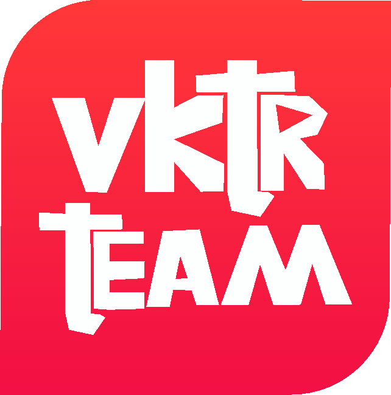
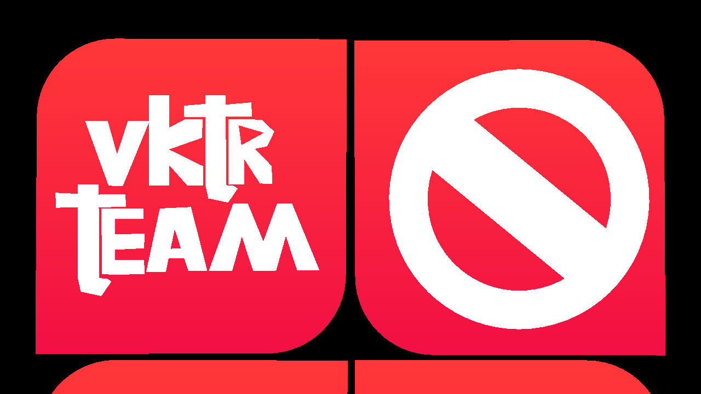
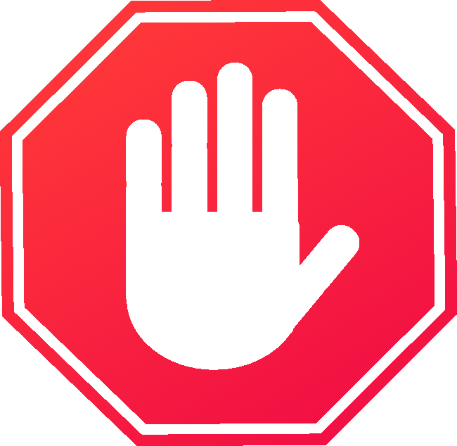

Сайт неготовый!
Нужно время, чтобы vktrteam.net был создан. Доступно пока что только на поддомены сервисов. Неудивительно, но вы можете переместится и на другие веб сайты с поддоменом ".vktrteam.net", в пример как vktr.vktrteam.net. Советуем больше всего следить за этим сайтом, ведь он может менятся в любое время!

А если серьёзно, то обновление будет ооочень сложным и вот почему: Экономика: Каждые валюты имеют свои значения. Соединить сайт и ООпельсины будет прям никак Архитектура: Цветок Доверия - функция, которую тоже сложно сделать потому что есть хоть и PHP да, но потом вечность исправлять, она будет в BETA-Тестировании в техническом перерыве. Подготовка: Даже если сильно хотите, ожидайте завтра. Или как так шото ничего не выпускаем, мы ленивые и просим прощения, теперь там будут настройки, новый дизайн без ИИшного и естественно... Новые функции которые вы можете ждать!
Планировка идей помогает развивать vktrteam.net лучше. Также можно дать идею вашим любимым сервисами команды, событий и возможные обновления.
Хотите создавать контент или код вместе с нами? Расскажите о своих навыках, и, возможно, именно вы станете частью VKTR Team. Просто нажмите "Анкета" сверху!
У тебя возникли ошибки? На шапке есть "Помощь", или попробуй нажать на кнопку "У меня проблема!", чтобы дополнить Справочный центр. Важно: Не пишите ничего, что не связано с проблемами. обязательный скриншот, почта или ID в vktr.
Чтобы предложить идею, необязательно выполнять 2 шаг. Нажмите на кнопку "OpenVK", чтобы связатся с vktr team

Некоторые кнопки или разделы могут не работать, а также может быть проблемы с кнопками в сервисах. Если проблема не исправляется, нужно подождать исправления!